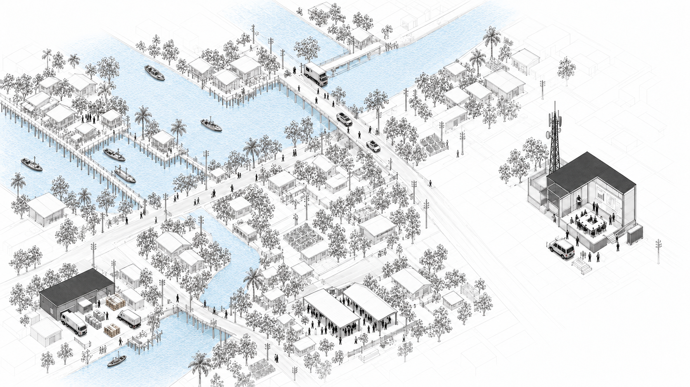

01
เริ่มจากสิ่งที่ต้องการ
มองความต้องการในพื้นที่ ก่อนจับคู่กับสิ่งที่มีคนพร้อมให้
ความช่วยเหลือจะไปต่อได้ เมื่อคน ข้อมูล
และทรัพยากรพร้อมทำงานร่วมกัน
LCCS Research ศึกษาการประสานงานในภาวะวิกฤต
จากคำถามว่า “ใครพร้อมช่วย” สู่ “ยังขาดอะไร และใครจะรับงานต่อ”
LIFE CONNECTION CRISIS SYSTEM
การศึกษาส่วนตัว · ยังไม่ได้ทดสอบภาคสนาม

มองความต้องการในพื้นที่ ก่อนจับคู่กับสิ่งที่มีคนพร้อมให้
ทรัพยากรหนึ่งรายการอาจต้องพึ่งคน เส้นทาง และอุปกรณ์อีกหลายอย่าง
การประสานงานต้องมีผู้รับผิดชอบ และข้อมูลที่ตามกลับไปยังต้นทางได้
PERSONAL RESEARCH / CONCEPT EXPLORATION
แนวคิดชุดโปรแกรมที่เชื่อมทีม ทรัพยากร สิ่งของ และศูนย์พักพิง เพื่อเห็นว่า มีอะไร ขาดอะไร และใครรับต่อ

ใครพร้อม และพร้อมทำงานอะไร — มองคนใช้งาน อุปกรณ์ และข้อจำกัดควบคู่กับทรัพยากรที่มี
ต้องการอะไร ของอยู่ไหน ใครรับต่อ — เชื่อมความต้องการกับสิ่งของ การขนส่ง และผู้รับช่วงงาน
มีคนเท่าไร และต้องดูแลอะไร — แยกยอดเจ้าหน้าที่ตรวจนับกับยอดยืนยันตัว พร้อมความต้องการดูแล
แนวคิดที่กำลังศึกษาและพัฒนาต้นแบบ · ยังไม่ได้ทดสอบการปฏิบัติงานภาคสนาม
ข่าวจากหน้างานมาหลายช่องทาง ผู้ประสานงานรับฟัง ทวน และสรุป เพื่อให้ทีมเห็นข้อมูลร่วมกัน ก่อนสื่อสารกลับไปยังพื้นที่

จุดรายงานในพื้นที่ / 01–04
วิทยุ · โทรศัพท์
วิทยุ
ข้อความ · บันทึก
โทรศัพท์ · ข้อความ
รับฟัง · ทวน · สรุป
สื่อสารกลับไปยังจุดรายงาน
ภาพแนวคิดสร้างด้วย AI · พื้นที่และข้อมูลสมมติ · การศึกษาส่วนตัว · ยังไม่ได้ทดสอบภาคสนาม
สองทิศทางที่กำลังพิจารณาสำหรับส่วนต่อขยายของ LCCS
ยังไม่เลือกว่าจะพัฒนาทิศทางใด หรือทั้งสองร่วมกัน · ส่วนนี้ยังไม่มีหน้ารายละเอียดให้สำรวจ